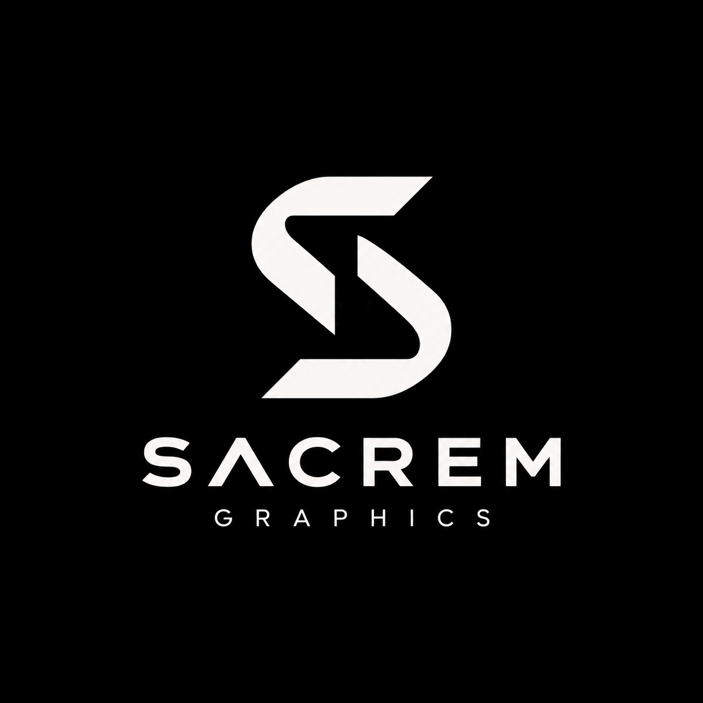
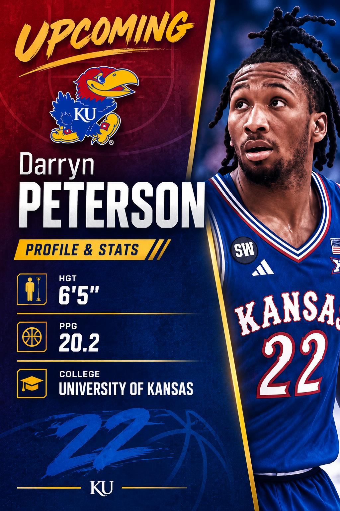
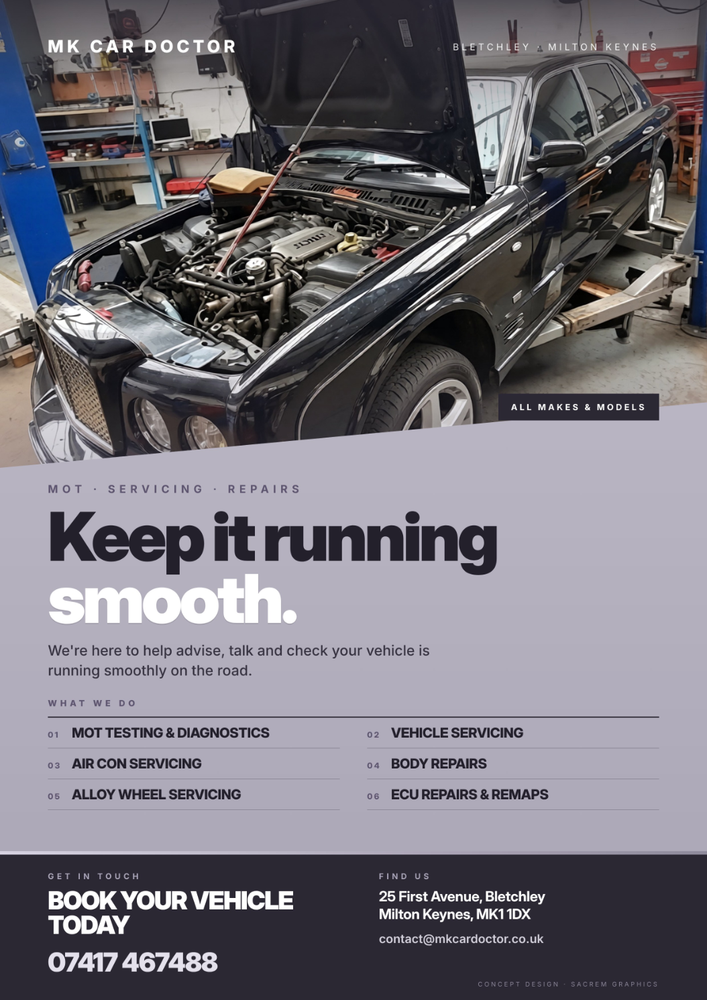
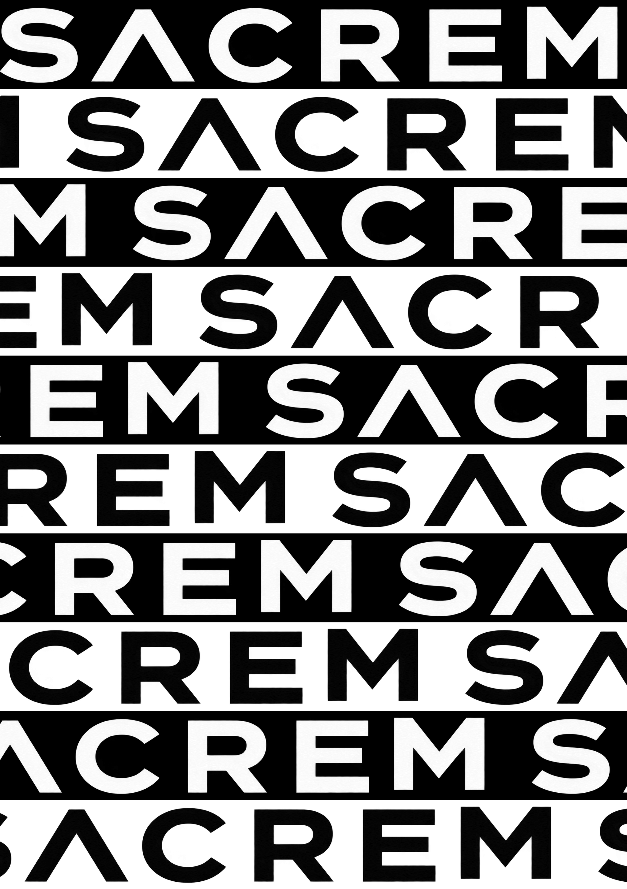

Social Media Graphics
Promotional posts, announcements and graphics for Instagram and other social platforms.

SACREM GRAPHICS creates clean, modern visuals for businesses, sports, social media and brands.
View My WorkGraphic design for businesses, teams and individuals who want their visuals to stand out.
Promotional posts, announcements and graphics for Instagram and other social platforms.
Player graphics, game-day designs, announcements and sports content.
Eye-catching posters and promotional designs for businesses and events.
Simple, modern visual identities and logo designs for new businesses and projects.
A selection of work created by SACREM GRAPHICS.



Selected personal and concept projects by SACREM GRAPHICS. (All the projects shown here are UNSOLICITED)
SACREM GRAPHICS is a growing graphic design studio focused on creating modern and effective visuals.
From social media graphics and sports designs to business promotions and branding, SACREM focuses on making designs that look clean, professional and memorable.
Every project is created with the goal of helping the client present their idea better.
If you need a graphic for your business, sports team, social media or project, get in touch with SACREM GRAPHICS.
Contact SACREM